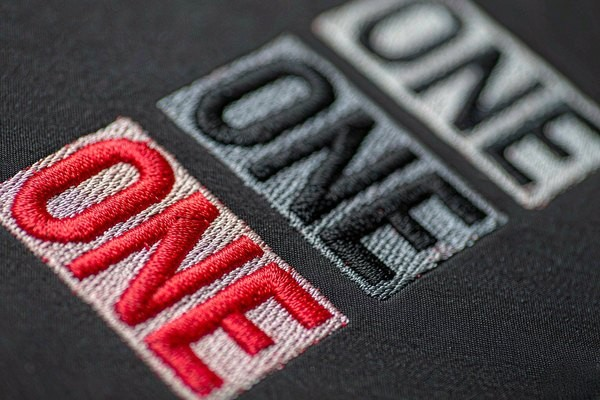
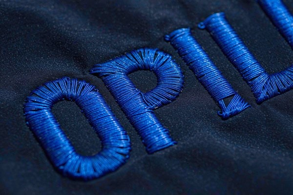

Patch Text Legibility: Font Size & Style Guide
Text is the first casualty of embroidery. A logo that looks razor sharp on screen turns to porridge at two inches because thread is a physical material with a real width — and that width sets a hard floor on what any needle can render. This guide gives you the actual numbers behind patch text legibility: minimum letter heights by stitch type, which fonts survive the transfer from screen to fabric, spacing rules digitizers wish every designer knew, and the escape hatches (woven, printed) when embroidery genuinely can't deliver.

1. Why Small Text Fails: The Physics of Thread
Every legibility rule in this guide traces back to one fact: embroidery thread is not ink. Standard 40-weight polyester thread — the workhorse of the patch industry — measures roughly 0.35 to 0.5 mm in diameter. That single strand is the thinnest line a needle can draw. No digitizing trick, no better machine, no sharper artwork changes it.
Now apply that to lettering. The stroke of a letter at 4 mm character height is about 0.8–1 mm wide — barely two thread widths. The gap inside an 'e' or between the legs of an 'n' at that size is around 1 mm. If your artwork's counters (the enclosed spaces in letters like 'a', 'o', 'e') are narrower than a thread plus a little wiggle room, the fabric shows through the stitches or the letters simply fuse into blocks. This is why the classic industry floor for embroidered text sits at 4 mm capital height — and why anything below it demands a different technology, not a better digitizer.
Screen design hides all of this. A 12-point font on a 27-inch monitor is 40 pixels tall, drawn with anti-aliased edges a fraction of a pixel wide. Fabric has no sub-pixel rendering. Understanding this gap is the first step to artwork that survives production — our logo-to-patch conversion guide covers the general simplification process; this article goes deep on the text-specific numbers.
2. The Hard Numbers: Minimum Letter Height by Technology
Different patch construction methods have genuinely different floors. These are the values we hold our own production to:
| Method | Minimum Cap Height | Comfortable Minimum | Why the Limit Exists |
|---|---|---|---|
| Embroidery, satin stitch | 4 mm | 6 mm | Two thread-widths minimum per stroke |
| Embroidery, 3D puff | 6 mm | 8 mm | Foam needs room to be cut clean |
| Embroidery, laser-cut appliqué letters | 8 mm | 12 mm | Fabric letters fray below this |
| Woven patch | 2 mm | 3 mm | Weave ≈ 0.25 mm per line, like fabric DPI |
| Printed / sublimated patch | 1.5 mm | 2.5 mm | Ink resolution — near photographic |
| Debossed leather | 5 mm | 8 mm | Die pressure crushes fine detail |
Two honest caveats. First, "minimum" means the result is legible up close — it will not look elegant. Second, these floors assume a competent digitizer using quality 40-weight thread; cheaper mills running thicker thread or rushed digitizing push every number up by a millimeter. When a design mixes tiny text with larger elements, our patch size guide helps you decide whether to enlarge the whole patch or cut the tagline entirely.
3. Stitch Types: What the Needle Actually Does at Each Size
Letter height doesn't just determine whether text is readable — it determines which stitch the digitizer must use, and each stitch behaves differently:
- Satin stitch (4–10 mm): the default for lettering. Rows of thread run side to side across the letter stroke, creating that smooth, slightly glossy column you see on quality patches. It shines in this range because each stitch anchors cleanly on both edges.
- Fill (tatami) stitch (above ~10 mm): satin stitches longer than 10 mm become loose, snag on everything, and lose their clean edges. The digitizer switches to a filled texture with a defined border — durable, but visibly textured, which slightly softens letter shapes.
- Running stitch (below ~4 mm): a single line of stitching, no fill. It's used for tiny text as a deliberate compromise: the result reads as a stitched line, not crisp lettering. Fine for a decorative word on a hat, useless for information someone must read.

The practical takeaway: if your design brief demands text under 4 mm that people must actually read — a URL, a slogan, a date — embroidered patches are the wrong tool at any price. Woven patches solve it by replacing thread columns with a weaving process that renders lines a quarter-millimeter wide; our woven vs embroidered comparison breaks down the full tradeoff. Printed patches go further, handling text down to 1.5 mm with photographic detail.
4. Font Selection: What Stitches Well and What Doesn't
Fonts are not interchangeable across media. A typeface that looks professional in print can be unusable in thread. Here is the honest scorecard:
| Font Category | At ≥6 mm | At 4–5 mm | Verdict |
|---|---|---|---|
| Bold sans-serif (Helvetica Bold, Arial Bold) | Excellent | Good | The safe default — wide strokes, open counters |
| Regular sans-serif | Good | Risky | Counters start closing below 5 mm |
| Serif (Times, Garamond) | Good | Poor | Serifs thinner than a thread vanish or blur |
| Script / handwritten | Fair | Poor | Thin connecting strokes break up; needs ≥8 mm |
| Thin / hairline weights | Poor | Unusable | Strokes narrower than one thread width |
| Condensed / narrow | Fair | Poor | Letters tall but strokes and gaps compressed |
Serifs deserve a special word, because brand guidelines so often mandate them. A serif's feet and caps are typically 0.2–0.4 mm wide at small sizes — literally thinner than the thread. The digitizer must either inflate the serifs (changing the typeface's character) or let them dissolve (changing the brand's look). Neither is what the client approved. If your identity font is a serif, either keep patch text at 6 mm and above, or approve a sans-serif adaptation for embroidery. The reasoning parallels what we tell cap brands in the hat patch branding guide: simplify for the medium, keep the essence.
Script lettering fails differently. Its beauty lives in stroke contrast — thick downstrokes, hairline connectors — and thread can't hold both. Chain-stitch style script at 10 mm+ can look fantastic and vintage (the aesthetic we explore in the vintage patch styles guide), but small script text on an embroidered patch reliably turns to fuzz.
5. Letter Spacing, Weight, and Density Rules
Beyond letter height, three spacing variables decide whether text survives:
- Letter spacing (tracking): give every pair of letters a minimum gap of about 0.8–1 mm — roughly two thread widths. Tight display-kerning that looks refined in print makes embroidered letters touch, merge, and read as one shape. Add tracking generously; nobody has ever complained that patch text was too airy.
- Stroke weight: target strokes between 1 and 3 mm. Below 1 mm you're asking a single thread row to carry a letterform; above 4 mm the satin stitch gets too long and should become fill. Bold weights of standard fonts usually land in the sweet spot without modification.
- Line spacing: for multi-line text, keep at least 1.5 mm between baselines of adjacent lines. Tighter leading makes the descenders of one line crash into the capitals of the next — and unlike print, nothing can be re-kerned after stitching.
One more digitizer-grade detail: avoid letterforms with tiny enclosed counters at small sizes. 'R', 'a', 'e', 'g' are the usual offenders. A skilled digitizer will open the counters manually (think of how the classic Boy Scouts font simplifies 'a'), which changes the letter's look but preserves readability. Decide in advance whether you'd rather have open counters or blocked-up letters, and tell your supplier — it's a one-line note that saves a proof round.
6. Viewing Distance: Match Letter Height to Where Eyes Actually Are
Legibility is relative to distance. A 4 mm word on a patch is readable in hand but invisible across a trade-show aisle. Use these pairings as a sanity check before finalizing sizes:
| Typical Context | Viewing Distance | Comfortable Letter Height |
|---|---|---|
| Cap front, name tag, wrist patch | 0.3–0.5 m | 4–6 mm |
| Chest and shoulder patches | 0.5–1 m | 6–10 mm |
| Back of jacket, display board | 1–3 m | 15 mm+ |
| Club banner, stadium | 5 m+ | Text barely matters — shapes do |
Notice the trap: patches combine the smallest canvas with the closest inspection. People will pull your patch six inches from their face to admire the stitching — every flaw is on display at precisely the distance text must work hardest. That cuts both ways: tiny supporting text can be decorative (fine), but the one or two words that carry your message must clear the comfortable minimums above, not the absolute floors.
7. Thread and Color: The Overlooked Legibility Levers
Geometry isn't the whole story. Two material choices move real-world readability more than most buyers expect:
Thread choice changes edge definition. Rayon's higher sheen makes letters pop but washes out fine contrast under direct light; matte polyester keeps edges visually crisper for small text and survives UV better outdoors — the full tradeoff lives in our thread types guide. Metallic thread, gorgeous as it is, kinks at the tight stitch lengths small letters need, so metallic text below 8 mm regularly looks chewed.
Contrast beats everything. A low-contrast pairing — navy letters on black felt, gold on mustard — can halve effective legibility at the same letter height. The strongest small-text combinations are one-step-apart in tone: white on navy, black on gray, cream on brown. If brand colors force a low-contrast pair, add an outline: a 1 mm border in a third color restores the edge definition the background steals. The color mechanics behind these pairings are laid out in our patch color guide.
8. The 10-Minute Proofing Ritual
You can predict most legibility failures before any thread is stitched, with three checks that cost nothing:
- Print at 100%. Print the artwork at true production size on plain paper, then set it on the garment or hat at its real position. Squint. If letters blur together on paper at arm's length, thread will be worse — paper has no 0.5 mm floor.
- The pencil test. Trace over the printed text's strokes with a standard ballpoint pen (≈0.7 mm line). Wherever the pen can't follow a stroke or enters a counter, the needle can't either. Rework those letters or their size.
- Order a stitched sample before the run. Digital mockups render thread with impossible smoothness. A physical sample — ours ship with 12-hour free proofs — shows the truth, including how the fill texture and borders interact at your exact sizes. Inspect it at arm's length, in both shade and direct sun, before approving mass production.
Frequently Asked Questions (FAQ)
Q1: What is the smallest readable text on an embroidered patch?
4 mm capital height is the practical floor for satin-stitched lettering — legible up close but not elegant. For comfortable, confident readability, design around 6 mm or larger. Below 4 mm, switch to a woven patch (2 mm floor) or a printed patch (1.5 mm floor).
Q2: Why does my patch text look blurry compared to the digital proof?
Digital proofs simulate thread with smooth vector edges, but real letters are built from 0.4 mm thread columns with visible texture. Small serif details and tight spacing that render perfectly on screen physically cannot exist in thread — the fix is larger text, wider spacing, and bolder fonts, not a better mockup.
Q3: What font is best for embroidered patch text?
Bold, clean sans-serifs — Helvetica Bold, Arial Bold, Futura Bold and their relatives. Wide strokes around 1–3 mm and open counters survive stitching almost unchanged. Avoid hairline weights entirely, and treat serifs and scripts as usable only at 6–8 mm and above.
Q4: Can 3D puff embroidery do small text?
Not really. Puff needs 6 mm minimum and only works with bold, simple letterforms — the foam must be cut clean between strokes. Thin or small puff text collapses into rounded lumps. Use flat satin stitch for anything under 8 mm.
Q5: How do I get tiny text like a website URL on a patch?
Three options, in order of fidelity: a woven patch (renders 2 mm text cleanly), a printed/sublimated patch (down to 1.5 mm, near-photographic), or embroidery with the URL moved to running-stitch as a decorative element nobody is expected to read. Mixing methods — embroidered logo on a woven background — is a common professional compromise.
Conclusion: Design for the Thread, Not the Screen
Patch text legibility isn't a mystery — it's millimeters. Keep letter heights at 4 mm absolute floor and 6 mm comfort floor, pick bold sans-serifs, space letters at least a thread-and-a-half apart, and match size to viewing distance. When the brief genuinely demands smaller text, move to woven or printed construction instead of hoping a digitizer can outrun physics.
Every patch we produce includes a free digital proof within 12 hours — send us your artwork and we'll flag any text that's headed for trouble before it hits the needle, at no minimum order. Request your free quote and get a stitched reality check on your lettering.